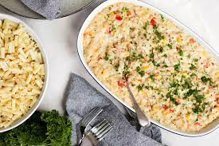

Tuna Mornay recipe

Description
Tuna Mornay is how you elevate canned tuna above a glum pantry staple or worse still, a desperate meal eaten straight from the can!
It's a tuna casserole pasta bake with a creamy sauce, sweet pops of corn and crunchy topping, baked until golden and bubbly.
Ingredients
- 350g / 12oz penne pasta (or other short pasta)
- 40g / 3 tbsp butter
- 3 garlic cloves , finely minced
- 4 tbsp (50g) flour , plain/all purpose
- 4 cups (1 litre) milk , any fat %, dairy or non dairy (1 quart)
- 2 tsp Vegeta, or chicken or veg stock powder/granulated bouillon (Note 1)
- 1/2 cup (50g) parmesan , finely shredded
- 1/2 tsp each mustard powder, onion and garlic powder (Note 2)
- 425g / 15 oz canned tuna , preferably in oil, drained (sub salmon)
- 400g / 14 oz canned corn , drained (or other veg, Note 3)
Instructions/Method
- Preheat oven to 180°C/350°F.
- Cook pasta per packet directions MINUS 1 minute. Drain then allow to cool slightly, then return into pot.
- White Sauce: Melt butter in a large pot over medium heat. Add garlic and cook for 30 seconds.
- Add flour and stir into melted butter. While whisking, gradually pour in about 1/3 of the milk. Once the flour-butter mixture is incorporated into the milk, pour in remaining milk and whisk.
- Add Vegeta, mustard, onion and garlic powder, whisk.
- When the milk starts to heat up, whisk constantly to make sure the white sauce doesn't catch on the base.
- After 4 - 5 minutes, the sauce should be thick enough that you can draw a path across the back of a spoon (see video). Remove from stove and stir in parmesan.
- Assemble & Bake - Add tuna into pasta and flake into large chunks with fork (not too much, don't want it to turn to mush when stirred). Add corn, pour over sauce, then gently stir
- Scrape into baking dish, top with Crunchy Topping.
- Bake 25 minutes until top is golden and edges are bubbling. Sprinkle with chives if desired then serve!